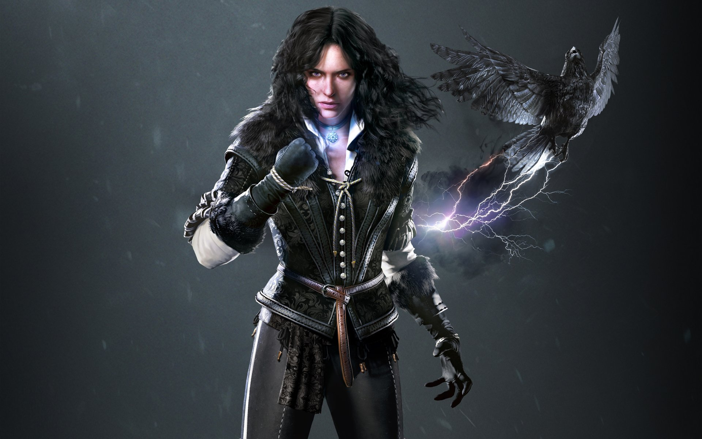

Olá todos Sejam bem vindos ao mundo de The Witcher!
Nessa wiki, você irá encontrar as coisas que você precisa saber sobre esse mundo fantástico!
- Geralt de Rívia
- Yennefer de Venderberg 
- Triss Merigold
- Cirilla

A história se passa em um mundo fantasioso dividido entre os reinos do norte (Temeria, Redenia, Aedirn e Kaedwen) e o império de Nilfgaard ao sul. Nesse universo de fantasia, vivem criaturas como anões, elfos, grifos, humanos e os bruxos. Os bruxos são humanos que sofreram mutações para ter mais força e reflexos mais ágeis. Eles também conseguem usar os "sinais", que são magias básicas que ajudam na hora da batalha. Nessa sociedade repleta de feitiços e monstros, o papel dos bruxos é o de caçador e matador de monstros, e eles são contratados por reis e lordes para fazer o serviço sujo. Devido às suas mutações, os bruxos não são bem vistos na sociedade. Geralt tem habilidades únicas entre os bruxos e a trilogia começa em The Witcher com o protagonista tentando recobrar suas memórias depois de um episódio de amnésia. Aos poucos ele vai se lembrando de eventos e pessoas do passado, como a Triss Merigold, feiticeira que faz par romântico com o protagonista e aparece nos outros jogos da franquia. A saga leva Geralt atrás dos segredos sobre as mutações realizadas nos bruxos que foram capturados por uma organização chamada Salamandra. Conforme o enredo avança, você descobre que é Jacques de Aldersberg, grão mestre da Order of Flaming Roses, que está por trás da Salamandra e roubou os segredos a fim de criar mutantes para seu exército. Geralt derrota Jacques de Aldersberg e acaba por salvar a vida do rei. Em The Witcher 2: Assassins of Kings, Geralt é acusado injustamente de matar o rei da Temeria e a sua missão é achar o verdadeiro assassino. A história se passa logo depois os acontecimentos do primeiro jogo e existem diferentes linhas narrativas dependendo das escolhas do jogador. O fato que não muda é que, no fim, Geralt acaba conhecendo um complô para o assassinato de mais reis do Norte. Letho (personagem presente em The Witcher 3: Wild Hunt) é um outro bruxo e o verdadeiro responsável pelo assassinato do qual Geralt saiu culpado. No fim, Geralt descobre que era o imperador de Nilfgaard que estava encomendando a morte dos reis do Norte para desestruturar a região e forçar novas invasões. Já em The Witcher 3: Wild Hunt aparecem duas personagens importantes: Ciri e Yen. Yennefer de Vengerberg é o verdadeiro amor de Geralt, apesar da relação do bruxo com Triss, desde o primeiro livro da saga, mas aparece pela primeira vez no terceiro jogo. O romance dos dois tem altos e baixos, assim como nos livros. Ciri é uma personagem fundamental no terceiro game da saga. Cirilla Fiona Elen Riannon é princesa do reino de Cintra. Geralt tira uma maldição do pai de Ciri e ela acaba se tornando filha adotiva do bruxo depois que o reino de Cintra é destruído por uma invasão. Esse acontecimento é demonstrado na série da Netflix, que é baseada nos livros originais. Ciri não passou por mutações, mas recebeu treinamento para bruxos e para feiticeiros, aplicados por Geralt e Yennefer. Em The Witcher 3, Ciri é perseguida por uma ordem chamada Wild Hunt (Caçada Selvagem, em português), que dá título ao game. Wild Hunt é um grupo de espectros poderoso que causam terror em todos e raptam pessoas para se juntar a ordem. Eles estão perseguindo Ciri e, seu objetivo no papel de Geralt é encontrá-la antes dos inimigos, fazendo aliados pelo caminho. A partir daqui, falar mais seria entregar todo o enredo do jogo, portanto, é melhor que você descubra o resto jogando e fazendo suas próprias escolhas para dar andamento à narrativa! Afinal, as decisões de Geralt influenciam o destino do mundo e dos personagens à sua volta.
Correr Shift Esq.
Pular Espaço
Rolar Segurar Espaço
Movimentação do personagem W,A,S,D
Ataque Rápido Mouse Esquerdo
Ataque Forte Mouse Esquerdo+Shift
Esquiva Alt
Contra-ataque Mouse Direito
Lançar Sinal Q
Sentidos de Bruxo Mouse Direito
Abrir Baús E
Pegar tudo Espaço
Usar viagem rápida E
Inventário I
Missões J
Mapa do Mundo M
Zoom Roda do mouse +/-
Marcador customizado no mapa Mouse Direito
Filtro no mapa F
Aqui é o fim da nossa wiki, mas sinta-se a vontade para nos mandar sugestões do que você quer ver.
The Witcher 3,Fandom